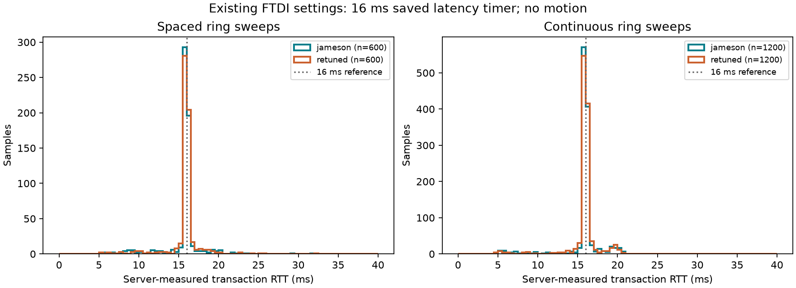

5 October 2026, America/Los_Angeles. Capture: 2026-10-06T05:23:40.439043+00:00 through 2026-10-06T05:25:01.794449+00:00 UTC.
Both rings were queried through the existing running HTTPS server. COM29 is jameson (slots 0–9); COM48 is retuned (slots 10–19). Each has ten enumerated actuators. Both FTDI adapters retain saved latency timer 16 ms.
| Phase/ring | Samples | Mean ms | Median ms | p95 ms | p99 ms | Max ms |
|---|---|---|---|---|---|---|
| spaced/jameson | 600 | 15.776 | 15.978 | 17.692 | 21.929 | 31.709 |
| spaced/retuned | 600 | 15.840 | 15.991 | 17.780 | 20.437 | 32.222 |
| continuous/jameson | 1200 | 15.874 | 15.987 | 19.352 | 20.677 | 28.615 |
| continuous/retuned | 1200 | 15.920 | 15.992 | 19.098 | 20.292 | 36.336 |

Counter changes across the full capture: {"n": 3640, "ok": 3640, "timeouts": 0, "crc_errors": 0, "errors": 0}. These include initial status reads and any concurrent UI polling. Playback counters were unchanged.
60 two-ring sweeps at one-second start intervals, then 120 back-to-back sweeps. Each ring serializes its ten QUERY_STRIKE transactions, while the two rings run in parallel. Thus even the spaced phase has back-to-back transactions within each sweep; this is not an isolated single-packet or adapter-loopback test.
For every probe, retain the preceding health snapshot and the returned snapshot. A raw RTT sample is admitted only when an address has exactly one additional attempted and successful transaction. Cumulative RTT sum difference must match the returned last RTT within 1 microsecond. Other intervals are excluded from percentile calculations; all raw responses remain available. Exclusions: {}.
The reported RTT is the server's own serial transaction duration, including receive draining, write/flush, ring/device processing, USB receive delivery and Python parsing. It excludes HTTP/TLS duration and acquisition of the server bus lock. It does not measure outgoing command latency, synchronized trigger skew, or acoustic impact timing. Existing browser polling was not disabled; admitted one-transaction intervals can include a query initiated by the browser. Current-checkout source hashes are saved, but do not prove the exact code already loaded by the process or flashed into devices.
| Metric | Samples | Mean ms | RMS ms | Max absolute ms |
|---|---|---|---|---|
| lock_wait_ms | 5850 | 0.011 | 0.195 | 12.162 |
| serial_rtt_ms | 2284 | 12.528 | 13.346 | 21.382 |
| lag_prediction_residual | 1285 | 0.456 | 3.658 | 53.701 |
These are historical session aggregates read before the user stopped and restarted the server. Selected numeric values were transcribed from the API response retained in this conversation. They are not part of the controlled probe sample population and cannot yield percentiles.
Residual means firmware-reported trigger-to-impact lag minus the prediction associated with the prior accepted strike. It excludes transport delay and actual host dispatch lateness. No-ACK chord dispatches do not produce RTT samples and clear residual attribution. The server currently records lock wait and serial RTT, but does not record intended-versus-actual dispatch time for scheduled playback; absence of that metric does not establish absence of scheduler jitter.
Concentration near 16 ms is consistent with the configured receive latency timer contributing strongly to turnaround. This is evidence for an A/B experiment, not proof that the entire delay originates inside the adapter. Compare the same non-motion test at a saved 2 ms setting after confirming it is applied by the reopened driver connection. Preserve both datasets. Logic-analyzer or adapter-loopback testing is still needed to isolate wire timing and adapter-only behavior.
No motion commands, enumeration, firmware changes, settings writes, counter resets or server restarts were performed by the capture. The user restarted the server before capture.
Raw API responses · Admitted samples · Statistics · Settings and source hashes · Historical values · Capture script · Analysis script